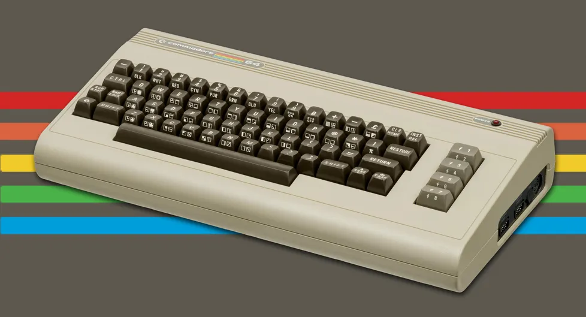

Ethem ÇAĞLAR
Hakkımda
Merhaba Ankara'da yaşıyorum, ben bir retro bağımlısıyım. 80ler 90lar elektronik ürünler, afişler, diziler, filmler, reklamlar hepsine hiçbir kriterine bakmadan coşuyorum.
Retro Konsollar
Başarıları
- Commodore 64
- Ev Bilgisayarları Piyasasında Liderlik: Commodore 64, 1982'de piyasaya sürüldü ve ev bilgisayarları pazarında liderlik konumunu sağlayarak büyük bir başarı elde etti.
- Oyun Endüstrisine Katkı: Zengin renkli grafikleri ve ses yetenekleri sayesinde, Commodore 64 oyun endüstrisine büyük bir etki yaparak birçok unutulmaz oyunun gelişimine katkıda bulundu.
- Kitlelerin Ulaşılabilir Bilgisayarı: Commodore 64, uygun fiyatı ve BASIC programlama dilini içermesiyle geniş bir kullanıcı kitlesine ulaştı, ev bilgisayarlarının popülerleşmesine öncülük etti.
- Nintendo GameCube
- Yenilikçi Disk Formatı: Nintendo GameCube, 2001'de piyasaya sürüldü ve mini DVD formatını kullanarak oyun endüstrisinde teknolojik bir yenilik getirdi.
- Taşınabilirlik ve Çoklu Oyuncu Deneyimi: Konsolun taşınabilir boyutları ve dört denetleyici yuvası, sosyal oyun deneyimini artırarak başarıya katkıda bulundu.
- Özgün Oyun Kütüphanesi: Nintendo GameCube, özgün ve ilgi çekici oyunlarıyla tanımlandı; Mario, Zelda ve Metroid gibi klasik serilerin yeni sürümleriyle büyük başarı elde etti.
Tanımlar
Commodore 64: 8-bit mikroişlemcisi, renkli grafikleri, ses yetenekleri ve oyunlarıyla 1980'lerde ev bilgisayarları arasında önemli bir konumda bulunarak popülerlik kazandı.

Nintendo GameCube: 2001'de çıkış yapmış, mini DVD'leri kullanan bir ev oyun konsolu; renkli grafikleri, özgün oyunları ve taşınabilirliğiyle dikkat çeken bir platformdur.